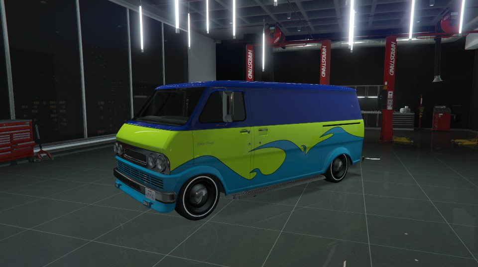
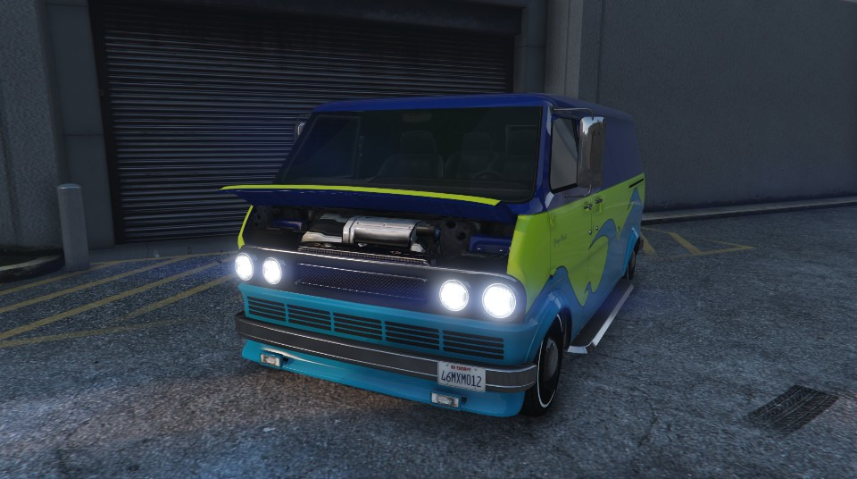

Der TONK Youga Classic vereint ein Klassiches Design mit neuster Motortechnologie und Leistung. Hier wurden keine Kompromisse geschlossen. Mit der einzigartigen individualisierbarkeit können Sie dem Youga auch einen persönlichen Touch verleihen. Der Youga Classic hat von Arbeitern bis hin zu Van Enthusiasten für jeden etwas zu bieten.
Technische Daten

Dank unseres Custom Youga-Programms können Sie das Fahrzeug in einer beliebigen Farbe bestellen. Doch es endet nicht hier: Sie können sogar custom Paintjobs einreichen oder vorgefertigte auswählen, um dem Youga Classic eine persönlichen Note zu verleihen. Hier sind Farbbeispiele zu finen.
Abmessungen

7,3-l-V8-Motor 7.3 Liter aus dem F-Super-Duty-Serie-Programm. 430 PS, 550 rpm, 644 Nm Drehmoment.